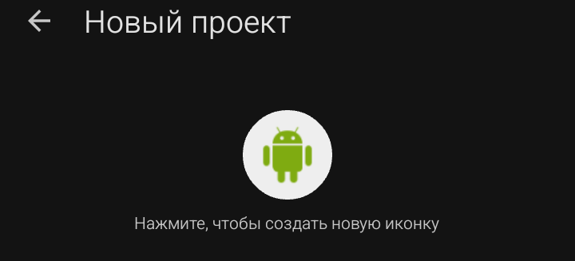
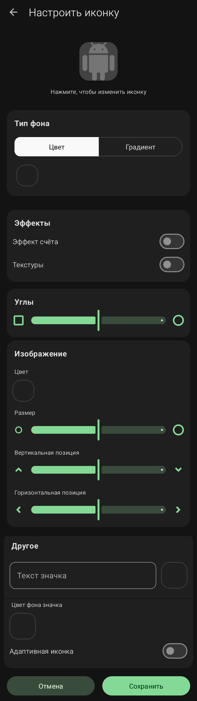
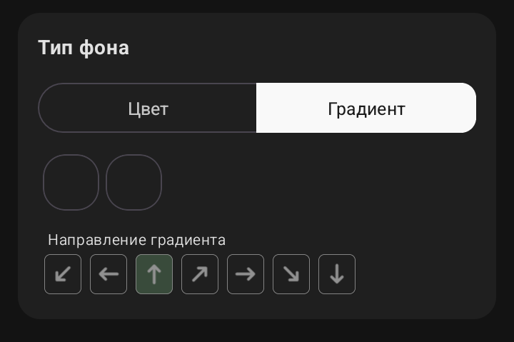

Иконка приложения
Круглая кнопка с логотипом Android по умолчанию. Надпись под ней — «Нажмите, чтобы создать новую иконку».

При нажатии открывается отдельный экран «Настроить иконку», где можно задать фон (цвет или градиент), форму углов, эффект счёта, текстуры, картинку, текст и значок. Иконка — это то, что пользователь видит на рабочем столе устройства под названием приложения.
💡 Совет: для первого проекта можно оставить стандартную иконку и заменить её позже через
Менеджер изображений.

·
Тип фона
Верхний блок редактора с переключателем из двух кнопок:
·
Цвет
— фон иконки будет залит одним сплошным цветом.
·
Тип фона → Градиент

Градиент — это режим заливки фона, при котором цвет плавно переходит от одного оттенка к другому. В отличие от сплошного «Цвета», здесь используется два цвета, между которыми строится переход.
При выборе режима «Градиент» блок меняется:
· Вместо одного квадрата появляются два квадрата предпросмотра:
·
левый
— начальный цвет градиента;
·
правый
— конечный цвет градиента.
Тап по любому из них открывает палитру выбора цвета.
· Ниже появляется блок «Направление градиента» — ряд из семи кнопок со стрелками, задающих, в какую сторону идёт переход:
· ↖ — влево-вверх
· ← — влево
· ↑ — вверх
· ↗ — вправо-вверх
· → — вправо
· ↘ — вправо-вниз
· ↓ — вниз
Активная кнопка подсвечивается зелёным фоном. По умолчанию выбрано направление ↑ (вверх).
⚠️ Важно: два цвета градиента задаются раздельно от темы приложения. Даже если ты поменяешь тему в проекте, иконка останется с теми оттенками, которые ты выбрал здесь.
💡 Совет: для читаемости выбирай цвета одной цветовой семьи (например, тёмно-синий → голубой). Контрастные сочетания (красный → зелёный) выглядят грязно на маленькой иконке.
❌ Частая ошибка: ставить одинаковые цвета в оба квадрата — градиент станет невидимым, фон будет выглядеть как сплошной. Если хочешь сплошной — просто переключись на вкладку «Цвет».
Под переключателем находится квадратный образец — тап по нему открывает палитру выбора цвета (или настройку градиента, если выбран режим «Градиент»).
💡 Совет: сплошной цвет выглядит аккуратнее на маленьких иконках, градиент — ярче, но требует аккуратного подбора оттенков.
·
Эффекты
Два переключателя (тумблер):
·
Эффект счёта
— добавляет текстуре иконки вид счётчика или риски (декоративный эффект).
·
Текстуры
— накладывает на фон дополнительный узор (шум, линии, паттерн).
По умолчанию оба выключены. Включаются тапом по свитчу.
💡 Совет: для первого проекта лучше оставить оба выключенными — иконка получится чище и читабельнее.
·
Углы
Слайдер между двумя иконками:
·
Слева
— квадрат (угол 0°).
·
Справа
— круг (угол 90°, максимальное скругление).
Двигая ползунок, ты задаёшь радиус скругления углов иконки. При нуле — квадрат, при максимуме — идеальный круг.
⚠️ Важно: это скругление применяется к самой иконке внутри редактора. Система Android может дополнительно накладывать свою маску (например, круглая иконка на Pixel), поэтому форма на устройстве иногда отличается.
·
Изображение
Основной блок редактора. Позволяет поместить поверх фона картинку — например, свой логотип или значок.
Состав блока:
·
Цвет
— квадрат, тап по которому открывает выбор основного изображения. При нажатии появляется диалог:
·
Выбрать из галереи
— картинка вставляется в исходном размере.
·
Выбрать из галереи (с обрезкой)
— предварительно кадрируется под квадрат.
·
Изменить на иконку по умолчанию
— вернуть стандартного робота Android.
·
Размер
— слайдер масштаба изображения относительно фона.
·
Вертикальная позиция
— слайдер сдвига изображения вверх/вниз.
·
Горизонтальная позиция
— слайдер сдвига изображения влево/вправо.
❌ Частая ошибка: ставить картинку слишком крупно — она перекроет фон и скругления. Начинай со среднего размера и подгоняй по краям.
💡 Совет: используй PNG с прозрачным фоном — тогда картинка сольётся с фоном иконки без белых углов.
·
Другое
Дополнительные параметры иконки.
Верхняя часть блока — поле «Текст» с квадратом предпросмотра справа. Позволяет вывести поверх иконки короткую надпись (например, одну букву-логотип).
Ниже:
·
Текст значка
— текст, который отображается на иконке как «бейдж» (маленький значок в углу).
·
Цвет фона значка
— квадрат, задающий цвет подложки под этот бейдж.
·
Адаптивная иконка
— переключатель, включающий режим Adaptive Icon. Это специальный формат Android 8.0+, при котором иконка состоит из двух слоёв (переднего и заднего плана) и сама подстраивается под маску, выбранную в системе (круг, квадрат со скруглением, «каплю» и т.д.).
⚠️ Важно: если адаптивная иконка включена, а слои настроены неаккуратно, на разных устройствах иконка будет выглядеть по-разному. Для первого проекта оставь переключатель выключенным.
·
Кнопки «Отмена» и «Сохранить»
·
«Отмена»
— закрывает редактор без сохранения изменений.
·
«Сохранить»
— применяет результат к экрану «Новый проект». Иконка обновится на круглом превью сверху.
Sketchware Pro 7 · Автор: RasNikGal · © 2026